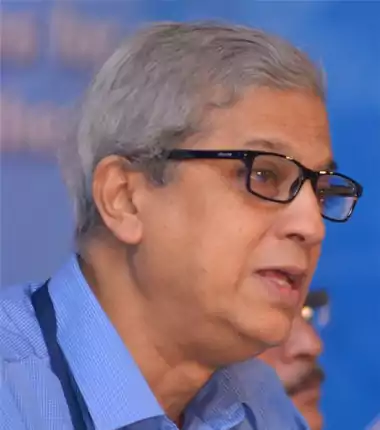
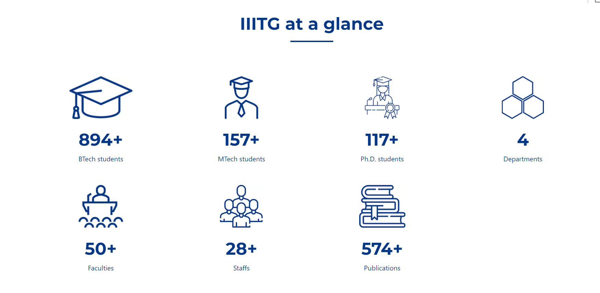

FROM THE DIRECTOR'S DESK........
I am Gautam Barua, Director IIIT Guwahati (IIITG). I was the Mentor Director from 2013-2016 and then I became a regular Director. I have ten years’ experience as Director IITG, and I was also at IITG in the formative years (1995-1998) when the Institute was being established. I also have experience in setting up IIT Patna as the Mentor Director (in 2008-09). So I have rich experience in setting up Institutions.
I am an IT specialist. I have been a faculty in Computer Science and Engineering for 38 years (13 years at IIT Kanpur, 18 years at IITG, and 7 at IIITG). I am therefore also taking part in teaching at IIIT Guwahati. You can find more about me at here.
